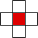
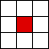

| One-dimensional, N=3 neighborhoods | |
| One-dimensional, N=5 neighborhoods | |
| Two-dimensional, von Neumann neighborhoods |  |
| Two-dimensional, Moore neighborhoods |  |
| There are MANY possibilities in addition to those considered here. | ||||||||
| In general, denote by N the number of cells in the nbhd. | ||||||||
| We consider only nbhds that are symmetric about the cell. Consequently, the cell whose nbhd we are describing is called the central cell of the nbhd. | ||||||||
| We shall use four kinds of neighborhoods. | ||||||||
|
Return to Cellular Automaton Basics.